Design Ideas
After the creation of our personas, we determined a set of criteria that we wanted our design ideas to meet. We wanted our product to place a priority on our users’ most important values - namely efficiency, organization, and making the best use of their time. We also wanted to make sure we created a new tool for our users to help them complete tasks more easily, not an entire new system that they would need to learn. Generally, we wanted to make the process of cooking simpler and more enjoyable for our users. We had an ideation session where we sat down with sticky notes and came up with every idea we could related to the space in which we were designing, and sorted them spanning from “blue sky” to “mountains” to “ground,” where blue sky ideas correspond to creative, life-changing ideas and ground ideas correspond to easier to implement but less impactful ideas.
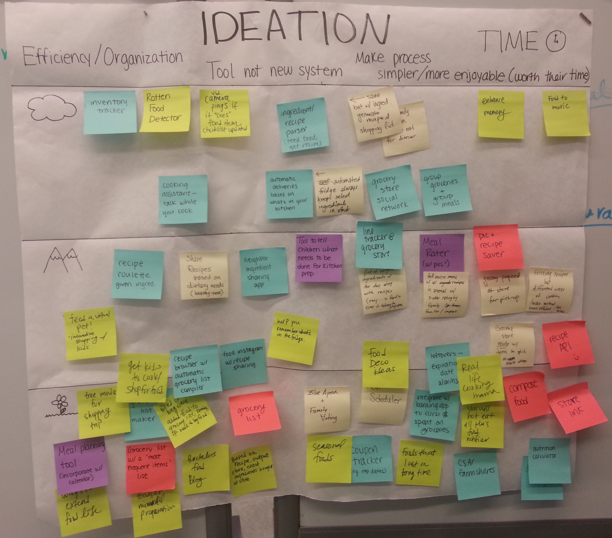
Having pushed the limits of our design space with various ideas such as a “grocery store social network” or a “coupon tracker,” we sat down to refine our ideas. Admittedly, not all of them were a good fit for all of the user needs that we wanted to meet, and not all of them were feasible, so we began to narrow down our ideas to fit the scope of this class. After comparing each of our more plausible ideas with the needs and values of each of our four personas, we selected four ideas to sketch out as an initial refinement of our multitude of ideas.
Cooking Assistant
We came up with a Siri-inspired application that featured a voice that would talk to you while you cooked. It would find you a recipe based on what you wanted to cook and provide you with step by step instructions. You could tell it when you had completed a step, and ask it for clarification when you were confused. We determined that many of our personas would be interested in this type of application - Hardworking Helen would be pleased with her increased efficiency while using this application, because she wouldn’t have to waste time going back and forth between her cooking and the recipe - she could just ask while her hands readied the other ingredients; Spontaneous Shawn would enjoy that the application kept cooking exciting - finding new recipes via the application and the very fact that he had a “robot” cooking assistant would entertain him as he cooked; Extrovert Elsa, who treats cooking as a hobby, would be able to try more experiments through this application and have more success because of the extra guidance she would have.
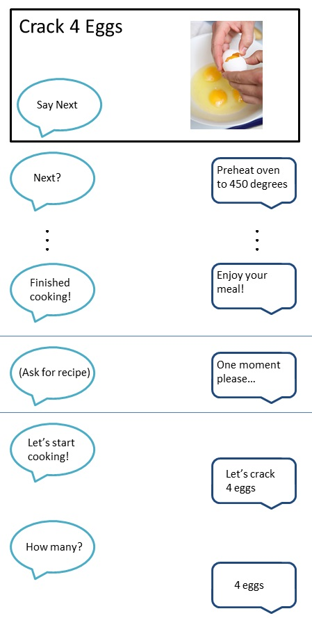
During our user visits, couple of our users commented how nice it would be if they didn't have to think while cooking. With Siri's AI-like ability to understand users, the application would alleviate users of much of the thinking required in planning a meal.
Shared Grocery List
Another idea we had was for a shared grocery list that every member of the family could add to in order to have a collaborative, exhaustive list prepared for whoever goes grocery shopping. There would be a screen on the refrigerator where you could add items as you ran out, and this identical list could be accessed from each family member’s phone. We found that this application would especially be useful for our persona Cooking Couple Carol and Corwin, because they enjoy teamwork and organization when cooking. If Corwin went grocery shopping one evening on his way home, he could find out what they needed by syncing his phone with the grocery list on their refrigerator, and Carol could also add to that list from her work using her smartphone to make sure Corwin bought the ingredients she wanted for dinner that night. Hardworking Helen would also have more control over her grocery shopping and be able to save time and follow a set schedule by knowing that everything she needed to know about the status of the foods in her refrigerator would be right at her fingertips while she was at the store.
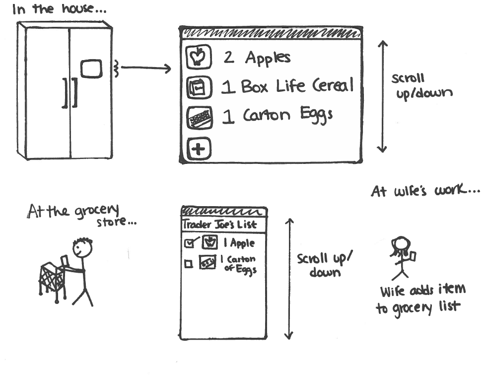
Of our users, especially ones from large families, found that the idea of having a single syncable grocery list would be very useful for making grocery list keeping less chaotic. Different family members kept different lists, each with their own agenda, and as a result, missed ingredients sometimes. Other users liked the idea of having a more customizable grocery list, that remember items the users most commonly bought.
Food “Instagram”
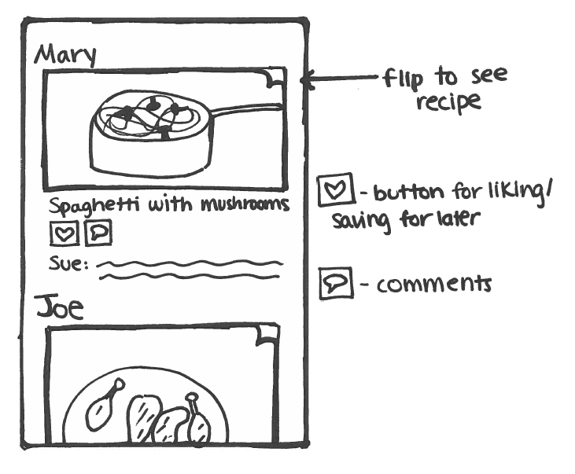
This idea was inspired by the popular photo sharing app, Instagram. Users would be able to take a picture of the meal they had just cooked, give it a title, list the ingredients and recipe, and upload it to a feed. Other users looking for inspiration for what to cook for dinner could open up the application, scroll through what other people had cooked, see the recipes, comment on them, and save the recipes for later. Many of our personas would use this application for different reasons - Hardworking Helen would use it for inspiration as she made meal plans; Spontaneous Shawn would use it to find exciting, tried-and-true new recipes that his wife could enjoy; Extrovert Elsa would be able to share her exquisite meals and feel validated as others commented on and saved her recipes; and Cooking Couple Carol and Corwin would be able to cook a variety of foods based on the many recipes being uploaded to the application each day in order to maintain a balanced diet. Food “Instagram” could be thought of as a social cookbook, with each persona using it differently to change the way they prepared their meals. Many of our users enjoy trying new recipes and or sharing recipes with their friends. Food Instagram would be a great way to do so.
Grocery Store Social Network
This application idea is analogous to the GPS application Waze, where users get their basic navigation functionality but also get crowdsourced data on traffic, accidents, detours, etc. We came up with an idea for an application that would serve a main purpose - compiling a grocery list - but would have the added bonus of telling the user which stores they could go to for the best deals, which stores had long lines, and where they could find good bargains on various food items. Because our personas all valued their time, an application like this could impact their lives by making sure they went grocery shopping at the right stores at the right time to avoid the crowds. Users similar to our persona Spontaneous Shawn would be able to keep costs low by finding good bargains while keeping cooking exciting by finding interesting ingredients on sale. An application like this would provide persona Hardworking Helen with the control she needed to make sure her grocery shopping stayed right on schedule.
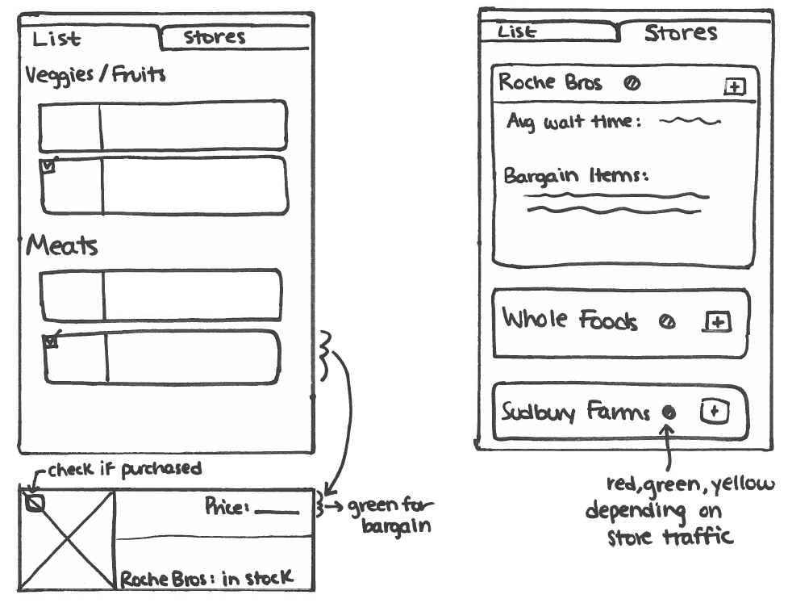
Depending on the the types of items they needed to buy, our users commented that they would go to different stores to buy the items. Sometimes though, if a store was having a sale on an item they would normally buy at a different store, they would buy the sale item. If the Grocery Store Social Network could point out stores that they don't normally go to, that not only have a sale on some of the user's grocery items, but is also closer than their usual store, our users would appreciate the time and money saved.
Choosing One Idea
Considering these four refined ideas, we decided to further develop the idea of a Food “Instagram”. We felt that it had a wide variety of use cases and addressed many of the values that our personas had. It was also a good choice because some of our other refined ideas were not as well scoped - the cooking assistant would require too much AI and voice recognition, the grocery store social network would require cooperation with various supermarkets which could not feasibly be implemented on a larger scale, and the shared grocery list was both too difficult (how do you design an refrigerator interface that takes into account partially eaten food) and too easy (just a simple shared list). Furthermore, the grocery store social network and the shared grocery list has the potential to impede too much onto our users routine shopping methods that the user would not want to adopt the apps. For example, even if the grocery store suggest an ideal time that the user should shop, the user could have a schedule that makes it very difficult to adopt the suggestion. In another example, many of our users check what food is available in the house before shopping, even if they have a physical shared grocery list. It's likely that our users would continue to do this with the electronic grocery list, defeating the purpose of the refrigerator tracking system.We found the idea of a Food “Instagram” compelling because, while we could start with just photo and recipe sharing, there was a lot of room for growth depending on what our users wanted.
We wanted to see how our users would interact with this application, so we composed a series of storyboards to fit each interaction scenario. We envisioned that our users would use this application to record the meals they cooked that they wanted to save to make again later, to find inspiration for what to cook based on what others were cooking and uploading, and to have a place where all of their food pictures were stored so they could show their friends in person. This met the needs of our users and personas who liked trying new recipes, sharing their accomplishments, and sought after a variety of foods when planning their meals.
We proceeded to make paper prototypes based on these interactions.
Paper Prototyping
Decision Making
When we reevaluated the storyboard of the Food Instagram in the context of our persona's needs, we found that the food instagram focused too much on the idea of creating a social network which only Elsa would be very interested in (her need for social affirmation). Our other personas were much more interested in efficiency and organization. For example, Carol and Corwin, Spontaneous Shawn, and Hardworking Helen are all workers with limited time at home and need to save time wherever they can.From Food Instagram, we discarded the ability to upload meals to a social feed but kept the basic idea that food instagram allows users to record a history of cooked meals. Users can take a pictures of a meal they had just cooked, add titles and notes, and save it to the app. We believed that this primary functionality is useful for Hardworking Helen, or Carol and Corwin to help them decide what meal to cook for the day by searching the history.
The app is very similar to a cookbook, except that it lacks an easy way to add recipes (other than manually typing them into the notes). We decided that the app should not include recipes because the process to add the recipe would likely be time consuming and would conflict with our persona's need for efficiency. Furthermore, our users tend not to be technologically savvy beyond basic tasks like sending email, or using the facebook app, so we thought that complicating the app with adding recipes would make the app too complicated for our users to use.
To build the prototype, we first began with identifying 4 tasks that we believed our users would commonly perform on our app, and produced storyboards and task statements which outlined goals, assumptions, task steps, time for expert, instructions for users, and any additional notes. Below are the interactions that our users performed on our prototypes. We’ve included conclusions based on how our users behaved in the descriptions of each task.
Paper Prototype 1: Take a Picture and Save
This is a task users have to do in order to use the app at all (the above tasks can't be done without adding the meals first).
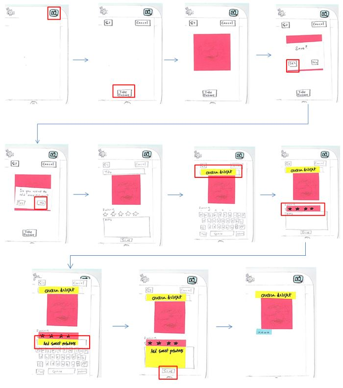
The camera button should indicate to the users that tapping it does something related to taking a picture, therefore indicative to adding a new meal. When tapped, the user activates the camera and takes a pic with the "Take picture" button (no other extra camera options to complicate interface. The user just wants the picture). We decided to include a save confirmation, in case the user didn't like the 1st picture taken. Otherwise, they would have to start from the main page.We also asked if users wanted to add more than one picture, so that users can take photos of the meal from multiple "best" angles (which would make them feel good about themselves, affirming Elsa's need for approval). The edit page allows the user to make changes to the "descriptions" of the images. Note that there is not the option to change the date. Our team expected that our users would take a picture the same day they cooked the meal. The stars are commonly used for rating, like the concept of 5 star restaurant.
Paper Prototype 2: Looking for an Idea
Since the goal is to easily store and later view images of the meals (very image centered), we thought the app should primarily be visually composed of a list of chronological images that users can scroll through, with minimal text. Users want to quickly identify meals by looking at the pictures, and move from one meal to another by scrolling through the list. Above and below each image would be a title, a rating, and a date, all of which are descriptions of the meals that users can use to plan. For example, users want to cook a meal that they haven't cooked in a while by looking at the date. Users could access notes (which contain comments like Mary liked this dish, or could use more salt), by tapping a button on an image. From our user visits, many of our users who used recipes often wrote inside of it, of adjustments they would like to remember if they ever wanted to cook it again. We thought the notes section could be used in a similar way.
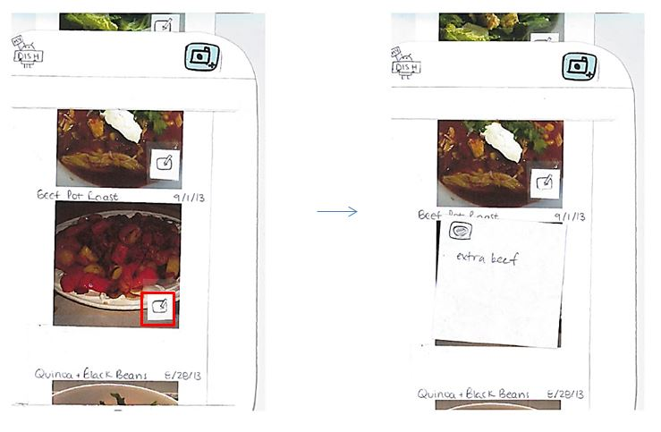
The notes are hidden behind the images rather than below it because, we expect the user doesn't want to see them all the time. The user usually would be using the app by scrolling through the images for quick processing. The extra text would just be a distraction and visually unappealing, at least until the user find a particular meal that they would need the notes for (For example, the user has found the chicken and brussel sprouts meal that looks appetizing to her and needs to check the notes to see if she wrote any reminders for cooking the meal, like brussel sprouts don't go well with chicken). We put the notes button on the image to signify to the user that there is "extra" information associated with the meal. To flip the image over again, they can tap the button that has an miniature picture of the meal.
Paper Prototype 3: Sharing Meal Pictures on Facebook
The app additionally has the ability to share the meal pictures over an existing social network like facebook and twitter, or email the meal to a friend. This feature helps satisfy Elsa's need for external approval by allowing her to "show off" her cooking capabilities. It also enables our other personas to see meals made by their friends, inspiring them to try new recipes (Shawn, Carol and Corwin, and Elsa all enjoy trying new recipes.) From our user visits, we confirmed that some of our users use facebook and share recipes with their friends and family.We expected that users would want to share ideas for meals for planning (inspiration) and for fun. We created the task of "sharing meals on facebook" in particular because some of our users used facebook, and was knowledgeable of it.
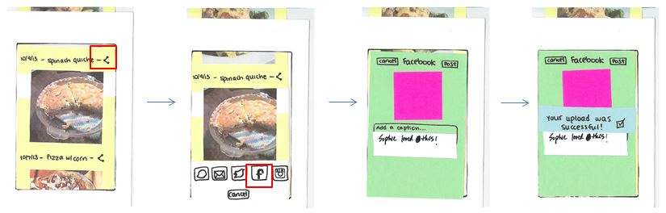
The share buttons (using an icon commonly used to indicate sharing/networking) are located next to all titles, which should indicate to the user that tapping it will share the meal below it. Again, remembering that our users are not technologically inclined, we stuck to a sharing format common to facebook and iphones (both of which our users use). A screen appears at the bottom with different sharing options (much like the iphone does seen in the image below). We just have the facebook "add photo page" pop up, which after the user adds comments, adds the photo to facebook. The process is more simple.
To assure users that their post was successful (taking the idea that positive reinforcement are better than error comments), we have a "success" pop up, which automatically goes to the main page afterwards.
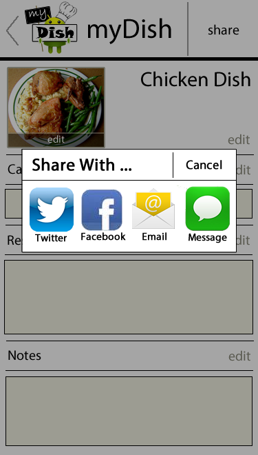
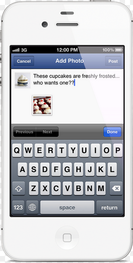
Paper Prototype 4: Show a Meal to a Friend
Our users often meet up with friends for social events and want to show off their meals (or just suggest meals to cook). This is a simple task of scrolling through the list to find the appropriate meal to share with friend.
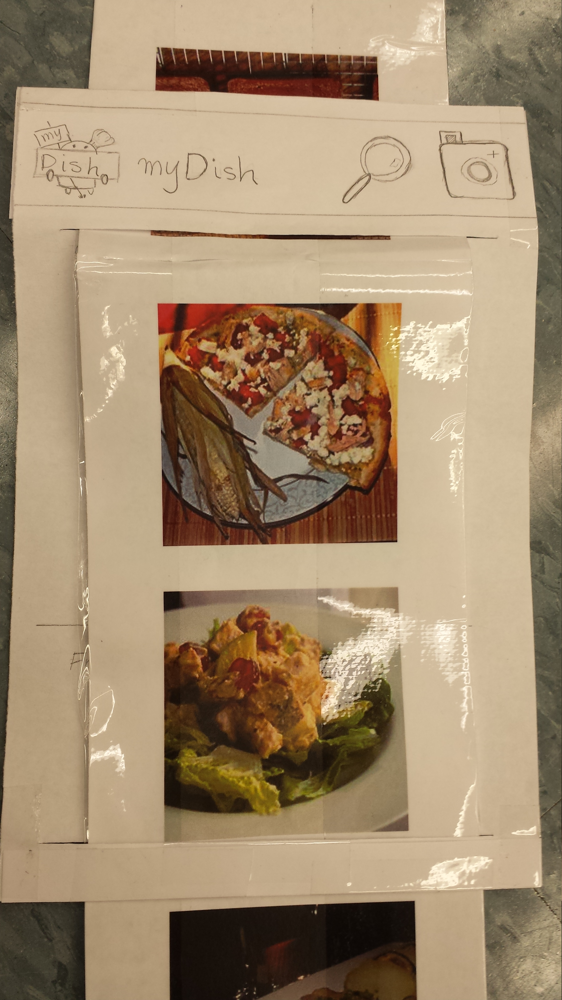
One of the things we wanted to check in particular was whether or not users would like a "filter" function to hide meals they didn't want their friends to see. The microscope on the top of the screen was meant to access the filter function (like the search icon).
User Testing
After we tried out our prototypes ourselves (and included features like cancel buttons we might have forgotten), we went on four visits, and 2 prototype modification iterations.User Visit 1 and 2
On the 1st two visits, we immediate received feedback asking for the ability to add recipes. One user commented that she would prefer sharing meal photos through facebook, rather than using an app that only shared meal photos (since she already knows how to use facebook). Both users prefered emailing over facebook, especially if they had the ability to share the recipe (and notes) along with the meal photo. They also did not recognize the share button. Our users didn't find adding multiple pictures of the meal very useful (they would just take one picture).The users didn't have trouble understanding the scroll interface, and had the intuition to tap on the picture. Unlike what we expected though, they tapped the picture itself rather than the notes button to access the notes. Also, users had no trouble understanding what a button did so long as the button had descriptive words instead of just a picture icon. For example the user confused the filter button (which looked like a microscope) as a zoom option.
We ran into a little trouble from user paper as our prototyping method. One user couldn't tell if the app logo on the top of the screen, was a button or non-button. Also our users kept looking off-screen instead of scrolling. Lastly, when the users were shown the 1st screen for the "Take and pic and save" task, they thought that pressing the camera button was currently taking the picture. It would be much more obvious to the user that the camera is on on a real phone.
We found that the last task was not very useful for testing interface. The steps required to perform the task was too similar to that of the "Looking for an idea" task. When users were asked about the filter function, they were confident they wouldn't use it. Instead, they suggested being able to categorize the meals, then be able to search for meals in a particular category. One even suggested that the meals could automatically categorize by its main ingredients. The main ingredients were the ingredients that were essential to the meal and not commonly stocked at home (chicken vs. salt).
Prototype Changes
The largest change we made was enabling users to add recipes to the meal pictures.Typing in the recipe into the note section would be too time consuming, and our users want to save time, not spend it. We also thought that any manual input of all ingredients and directions would be too time consuming for our users to use the feature. Knowing that our users often cooked recipes that they found on the internet, we designed a way for users to at add recipe urls to the meals. This way, the users can click on the url link to quickly access the recipe of the meal.
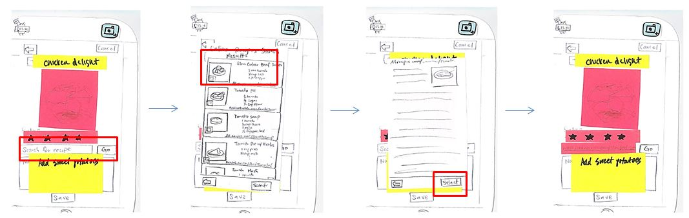
It would make sense to add the recipe when adding the rest of the meal descriptions.The user would type in the search words in the "search for recipe box" with a go button, much like standard search boxes. (an interface we believe our users would be familiar with).
We decided that when the list of possible recipe urls appears (the second screen in the image above), the screen should be smaller than the app screen to indicate that the user was still in the app instead of in an internet browser. The list is made to look like each recipe is a big button to indicate to the user that the user can click on the recipe button for more information. The big button contains information like ingredients, picture of meal provided by that recipe, and the recipe title, so that the user can find the exact internet recipe they had used. to check that the recipe is correct, by pressing the recipe button, a screen showing a snapshot of the recipe page is shown.
The "Do you want to add another picture" screen was removed along with the last task.
User Visits 3 and 4
Like the 1st two users, users 3 and 4 ran into similar troubles (especially with icon familiarity), and had similar ideas about additional features they would like (like being able to categorize meals, and add recipes).One of the biggest comments from our users to consider what the comment that "our generation uses email". When sharing recipes, they showed preference for emailing rather than social networking.
Interestingly one of our users would save the meal every time she added a new description, then go back to the "edit page/add descriptions page". Through this we discovered we did not implement the ability to edit existing meals. This also inspired the idea that instead of having one edit button, we can have an edit button next to every description. This way we would not need to create a separate edit page, and users could feel as though the phone was saving the edit per description rather than the whole meal. This would feel less of a risk to the user (like accidentally deleting all edits).
She also tapped the picture during different tasks and expected a different outcome for the different tasks. Tapping the picture opened the edit page or opened the notes. This made us realize how important it would have been to combine the prototypes into one prototype.
The users did not end up using the recipe url adding, but we suspect this was namely due to the instructions we gave them (which said to add a meal based on the idea that the recipe was recommended by a friend). When asked about it, the users verbally commented they would find this useful. One of the users indicated that they tended to write recipes down and would probably just type the recipe into the notes section. Either that, or they would want to add recipe by taking a picture of the recipe.
Our Current Design
Our current design includes a list view of all the recipes that the user has taken, a way of filtering the list via categories, adding new recipes, finding new recipes, and editing recipes. The main screen, the screen the user visits on opening the app, contains the list of all pictures of meals and recipes saved by the user. On this screen, there are four interface to function mappings: adding an entry, editing an entry, sharing entries, and searching (filtering) entries.
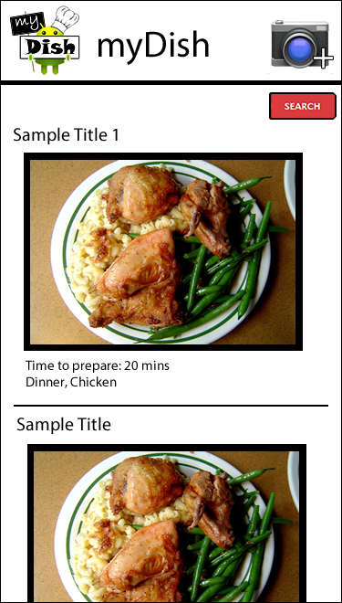
Adding an Entry
To add an entry, users tap on the camera button. One shortcoming of this in our paper prototypes was that our users thought that the camera button immediately took the picture, but that may have been simply due to a poor representation of the main screen (which was blank because there were no entries). Otherwise, users collectively agreed that cameras naturally mapped to taking a picture. Tapping on the button takes the user to the camera screen, which has the entire background as the capture screen and a “take picture” button to take the picture. The built-in camera on a phone automatically incorporates an additional dialog to save or discard the image.
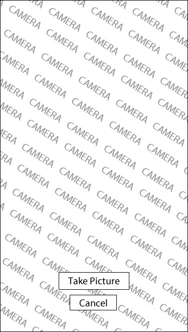
Upon choosing to save the capture image, the user is taken to the “add an entry” screen. On this screen, the user can specify any, if not all, of the details for the entry. Tapping the image on the “add an entry” screen will allow the user to retake the picture (taking them back to the camera screen), but there will be an additional dialog that prompts the user to make sure the user wants to edit the picture. This additional feature was added to prevent the user from waiting for the camera to load up again if the user did not mean to edit the picture. (Side note: tapping the image maps differently on the main screen.)

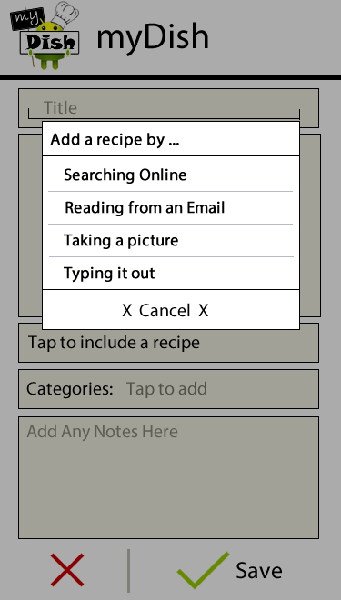
The larger dialog shows the recipes found online by searching the title of the recipe by default or another user specified query. The results of the searched are shown as small snippets of the recipe name, source, and thumbnail. Tapping the item will bring up the site link where the app found the recipe but is not necessary to add the recipe.. Tapping on the icon toggles a checkmark on the image, indicating that the item has been selected. The user can then specify whether to grab the url or the recipe itself from the site. We decided to include searching online for recipes because most of our users have indicated that they regularly look for recipes online when trying to decide what to make. In addition, there are extremely large databases of recipes from vast collections of cookbooks online, which makes searching for a recipe online easier than through various physical cookbooks.
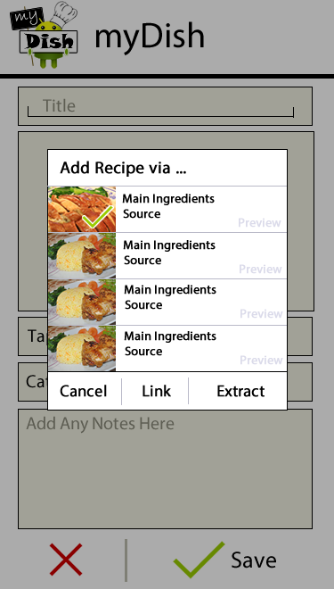
To add categories to the entry, users can tap the categories button. Our users have suggested a couple of different categories that are useful like main dishes, appetizers, baked goods, and less than 30 minute meals. We have decided that we can include some common general categories that can be removed by the user. Users can also add categories that are more specifically tailored to their needs. The category dialog allows the user to type in a category and have an autocomplete list show what categories exist or add the input to the list.
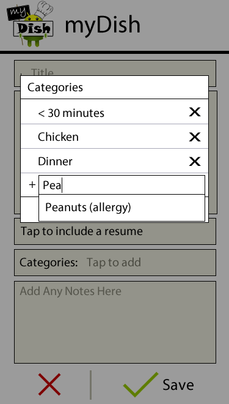
Editing an Entry
Going back to the main screen, users can tap on the image to edit an entry. During our prototype testing, we found that users instinctively tap on the image whenever they want to do something with the image regardless of what they were asked to do. Their expectations of what tapping the image did differed accordingly to the tasks they were asked to perform on the app. As a result, we decided to make all the features users would want to do accessible by tapping the image. We are considering allowing the user to tap anywhere to achieve the same, in case some users prefer tapping on the text or the title. Because the title and text are currently not mapped to anything, there will be little loss in functionality for our users by mapping it to the entire item as opposed to only the image. The following screen is shown when users tap the image.
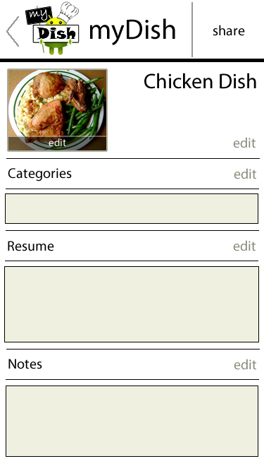
On this screen, the user can see all the information that the user saved for that entry. “Edit”s are placed for the user to edit specific details in the entry; they are intuitively placed for the user to know which edit matches with which detail. We have considered having a single edit button or a save button at the bottom of the screen to edit/save the entire screen at once, but our users either did not wish to edit every detail but felt compelled to by the opportunity or thought they had to hit save after editing each detail. As mentioned before we also put the share functionality on this screen by having a share button at the top of the screen next to the icon. We chose not to place the share button at the bottom of the screen to allow the user to quickly share without scrolling through potentially long notes or recipes.
Sharing an Entry
To share an entry, the user can tap the share button on the top-right hand corner of the screen. A dialog containing the different sharing methods come up. The design of this bar was inspired by the iOS share dialog. We are considering limiting the options of sharing to email and perhaps facebook because our user group are most familiar and comfortable with using email, but having labels under the icons can both clearly define what each icon is and allow the users options of other methods without deterring them from email. In fact, our team was surprised by how our users seemed to prefer email to other means of sharing recipes with their friends, instead of social network sites like Facebook or Twitter. We have considered limiting the sharing option to email, but we would like to keep in the other sharing mechanisms because we believe it will appeal to a wider audience with more options. Each sharing method will then take the user to the usual api associated with those applications, containing the recipe and entry details.Searching (Filtering) for Entries
To filter for entries by categories, there is a clearly located search button on the main page that expands to a search bar. We originally had the standard magnifying glass icon for searching, but our users thought it mapped to zooming in on a particular image. Having an entire search bar at the top was a little too distracting and cluttered, so we decided to have an expandable search bar that would show its entire functionality when the user requests it. We also might consider searching for the titles of recipes in addition to the user-determined categories later, once we have an opportunity to do more user evaluation.
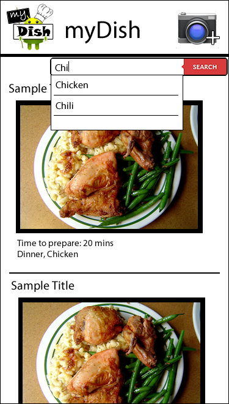